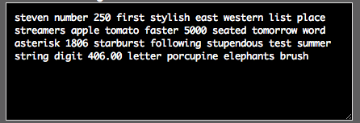
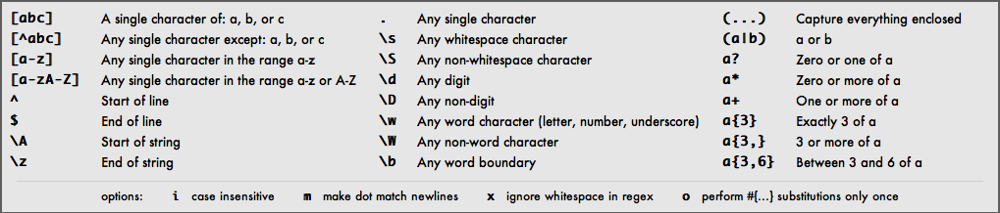

When I first saw a regular expression, I was confused, to say the least. I was staring at these letters and special characters bunched together. It just looked like gibberish to me. Surely, I thought, there must be some typos here. This doesn't actually mean anything, right? Why would I want to use such a thing in the code that I was writing? There's no way I can decipher this. What's the point? I'll just avoid regular expressions. They just seem too complicated to understand. Well, it's true that regular expressions can be somewhat overwhelming and intimidating at first glance. However, they prove to be quite useful.
A regular expression, or regex, is used in pattern matching in strings, performing find and replace type operations. Regular expressions can be used to pull information from text such as code, spreadsheets, and documents. With regular expressions, everything is a character. You write patterns to match a specific sequence of characters (or strings). Letters, digits, punctuation, and special characters can be used.
There are a number of regexes that can be used. Too many for the scope of this post. I'm going to touch on just a few to better illustrate how to use them. Let's use the following as a test string:
Now let's say that we want to find all patterns of 'st' at the beginning of any words. We can use the following regex for that:
\bst
The /b denotes a word boundary. We can flip that around if we wanted to find all words that end with 'st'.
st\b
What if we wanted to search for a more complex pattern? (This one isn't actually that complex.)
er\s\w
What that did was search for a pattern with consecutive letters 'er' followed by any whitespace character followed by any word character (letter, number, underscore).
For a final example, let's get a little crazy. Ok, it's not too crazy. It's not very practical either. I'm just trying to illustrate the different combinations of regexes that can be used.
a..\s\w[tea]
There, we searched for a pattern of the letter a followed by any two characters (..), followed by any whitespace character (\s), followed by any word character (\w), followed by a single character of t, e, or a ([tea]).
Here's a handy reference chart for all of your regex needs. You can play around with regex at Rubular.
